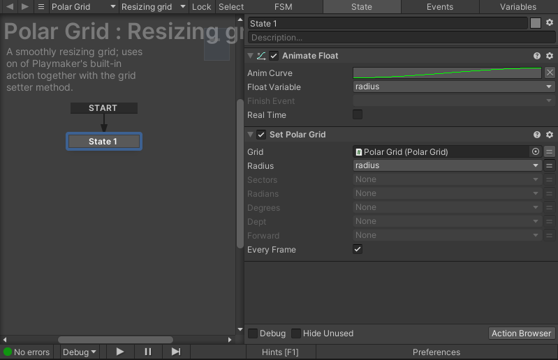

Playmaker actions overhaul
published:
categories: progress
Let's have a mental exercise: image something shameful you have done, it doesn't have to be the most shameful thing, just something that you really are not proud of should do. Now imagine putting it in a sealed box where it will be rotting and festering for years. Now imagine having to open that box, slowly lifting the lid as the rancid smell starts creeping out of the box. That is how it felt when I opened up the old Playmaker support.
I added Playmaker support due to popular demand and it should have been really simple on paper: just provide actions which correspond to the classes and methods we have. The problem is that I made a separate action for every single thing you could possibly do. Want to get the radius of a polar grid? That's one action. Want to get the angle of the same grid? That's another action. Want to also set those two properties? That's two more actions. With how many possible combinations of properties and methods there are, you can easily imagine how it spiraled out of control very quickly.
The new actions
I don't remember why I did it that way. Maybe it was the only way back then? Or maybe I just didn't know what I was doing. Anyway, I decided to clean up real good and merge actions which actually belong together. Getters and setters are still separate actions, this is also how the official Playmaker actions work.
Grid property accessors
Grid property getters are simple: they just read the property from a grid object and make it available. All properties of a particular grid class have been merged into one action per grid class. If we don't care about a particular property we can simply ignore it.
Grid setters are a bit more complicated. For starters not all properties are
writeable, so some setter actions have fewer properties than their
corresponding setters. There is another problem though: what if we do not want
to set a particular property? This is where Playmaker variables come into play:
if a field is set to a variable, but the variable is None, then the field is
ignored and not set. This allows us to store all setters in one action, but
still retain the ability to pick and choose which setters to actually run.
Coordinate conversion methods
The meat and potatoes of Grid Framework. For every grid class there is one action with four fields:
the input value
the output value (a variable)
The source coordinate system (an enum)
The target coordinate system (an enum)
This slightly increases the size of each action, but it cuts down the number of actions drastically.
Conclusion
At present there are 28 individual actions. Out of those four are for conversion, so that leaves 12 getters and setters each. That's still a lot, but it is a far cry from the original count of 104 individual actions. Yeah, I'm really not proud of that one, but now is the opportunity to make up for it and get it right.
